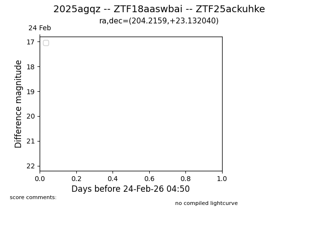
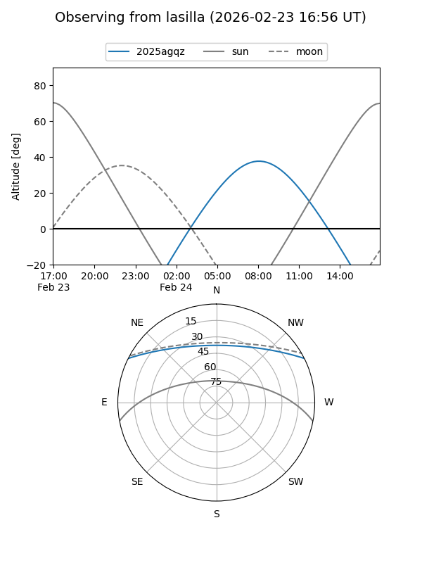
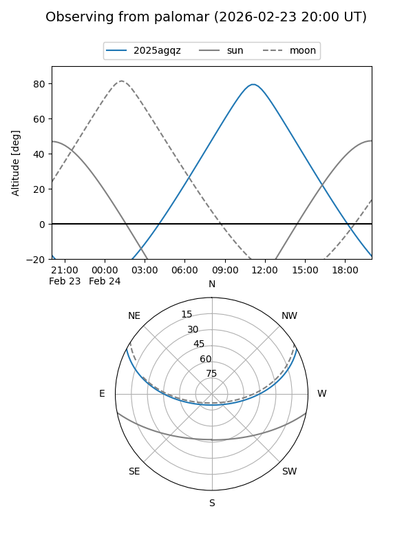

2025agqz
Target 2025agqz at 2025-12-18 11:18
Aliases and brokers:
FINK: fink-portal.org/ZTF18aaswbai
Lasair: lasair-ztf.lsst.ac.uk/objects/ZTF18aaswbai
ALeRCE: alerce.online/object/ZTF18aaswbai
TNS: wis-tns.org/object/2025agqz
YSE: ziggy.ucolick.org/yse/transient_detail/2025agqz
alt names
ZTF18aaswbai (ztf,fink_ztf)
2025agqz (tns,yse)
Coordinates:
equatorial (ra, dec) = 204.2159,+23.13204
equatorial (HMS+DMS) = 13:36:51.80,+23:07:55.34
galactic (l, b) = (14.1784,+78.97530)
Photometry
last ztfg=19.53, ztfr=19.57
1 ztfg, 1 ztfr detections
Lightcurve

Visibility


Additional plots